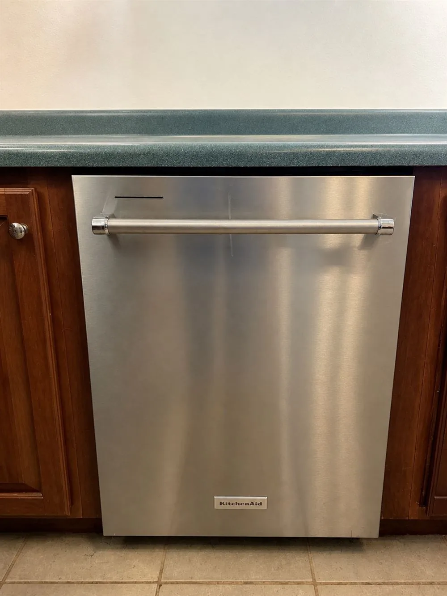

Greater Tucson appliance service
Dishwasher Repair
Experienced diagnosis for dishwashers that will not start, fill, wash, drain or complete a cycle.

Dishwasher help
Follow the cycle to the point where it fails.
A dishwasher relies on water supply, sensing, circulation, heat and drainage at different points in the cycle. House & Hand recreates the complaint when practical, observes the operating sequence and checks the functions related to the failure.
Problems we can evaluate
Common concerns include no start, poor fill, weak washing, standing water, leaks, unusual noise, a cycle that stops early or a displayed error code. Installation conditions and the appliance model can affect the diagnosis.
Useful information
Tell us whether water enters the tub, whether the wash sound begins, whether water remains at the end and what any error message says.
Spooky savings
$85 diagnostic
Schedule by November 1, 2026.
Regular diagnostic rate $110. Offer applies to diagnostic appointments scheduled through November 1, 2026. Cannot be combined with another offer.Related service
Appliance repair where you live.
Need dishwasher help?
Tell us where the cycle stops.
Call with your address, model number and a brief description. We will confirm whether the appliance and location are within our current schedule.